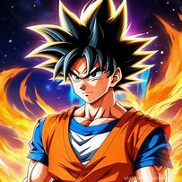
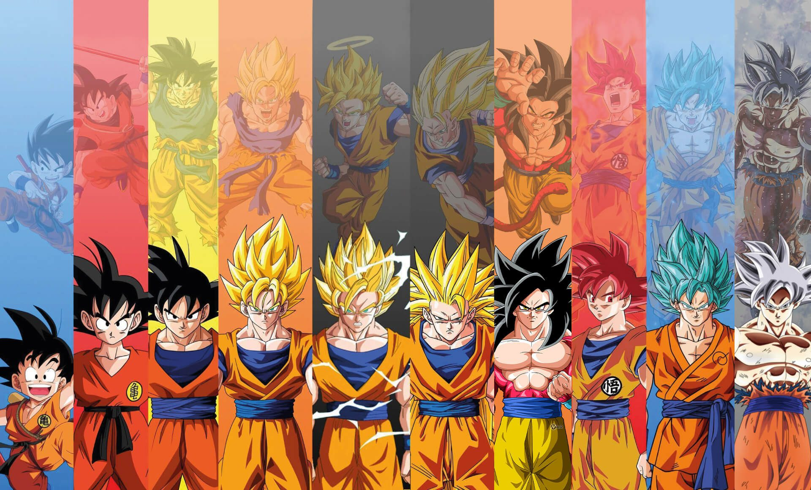
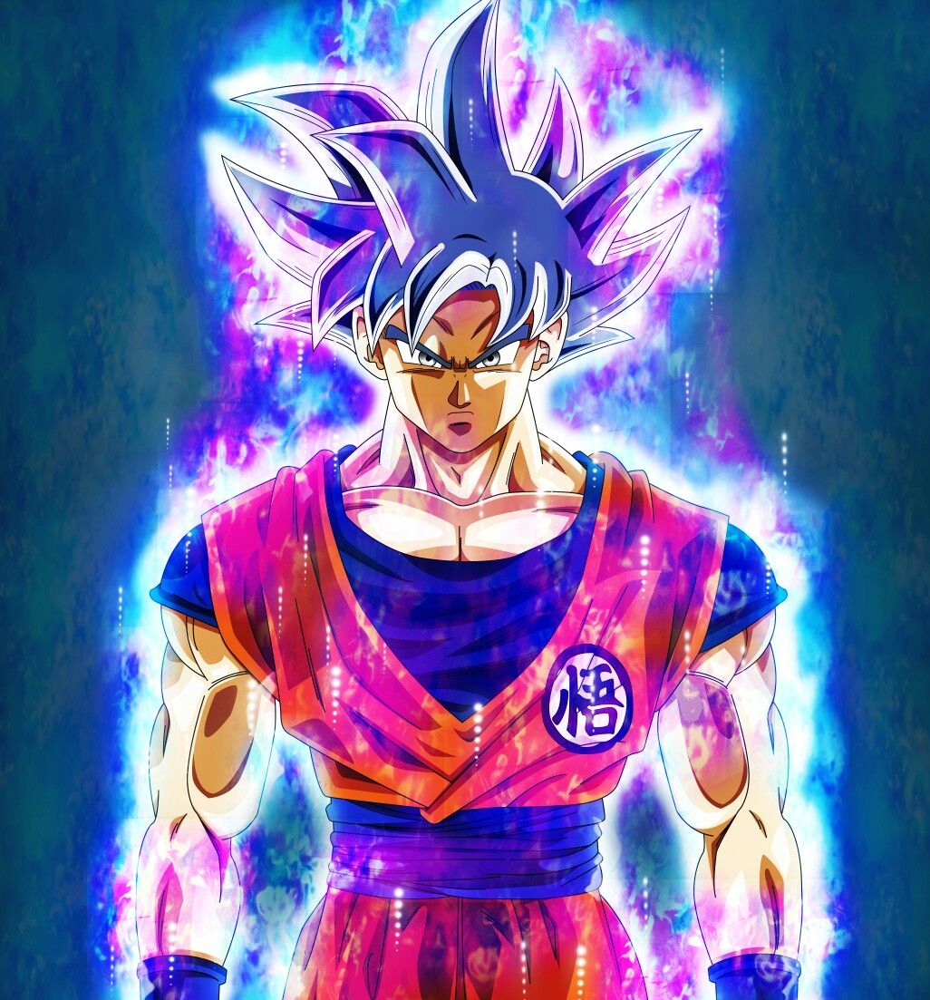
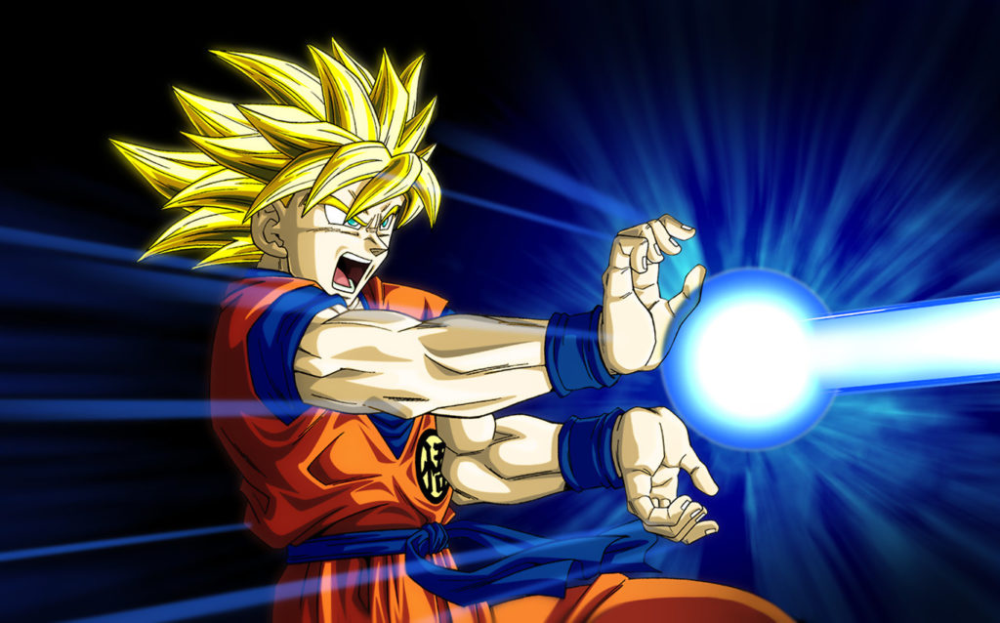

|
 No pienso que esté salvando el mundo. Lo que ocurre es que acudo a cada conflicto por la batalla, lo que ronda por mi mente es derrotar al más fuerte para poder convertirme en el más fuerte. — Son Goku al Androide |
¿Quien es Goku?Son Goku, nacido como Kakarotto en el Planeta Vegeta, es un guerrero de la raza Saiyajin. Fue enviado a la Tierra siendo un bebé para conquistarla, pero un golpe en la cabeza lo hizo olvidar su misión y crecer como un niño noble y de buen corazón, criado por el Abuelo Gohan. Desde pequeño demostró una fuerza increíble y una pasión infinita por el combate. A lo largo de su vida, Goku se entrenó con grandes maestros como el Maestro Roshi, Karin, Kaio del Norte, y más tarde con Whis, un ángel guardián. Gracias a su entrenamiento y a su espíritu incansable, participó en múltiples torneos de artes marciales y enfrentó a enemigos poderosos que amenazaban a la Tierra y al universo, como Piccolo, Vegeta, Freezer, Cell, Majin Buu, Bills, Zamasu y Jiren.
|
Aqui se pueden apreciar algunas de sus transformaciones...

Transformaciones
 Ultra Instinto |
Técnicas y poderes
 Kamehameha |
Mas sobre el...
.webp)
Goku |
Su característica más notable es la capacidad de superar sus límites una y otra vez. |